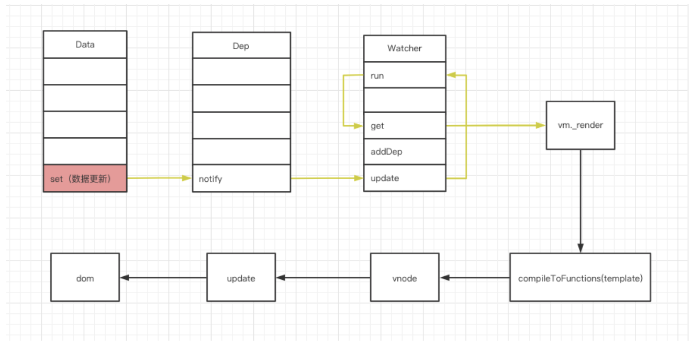
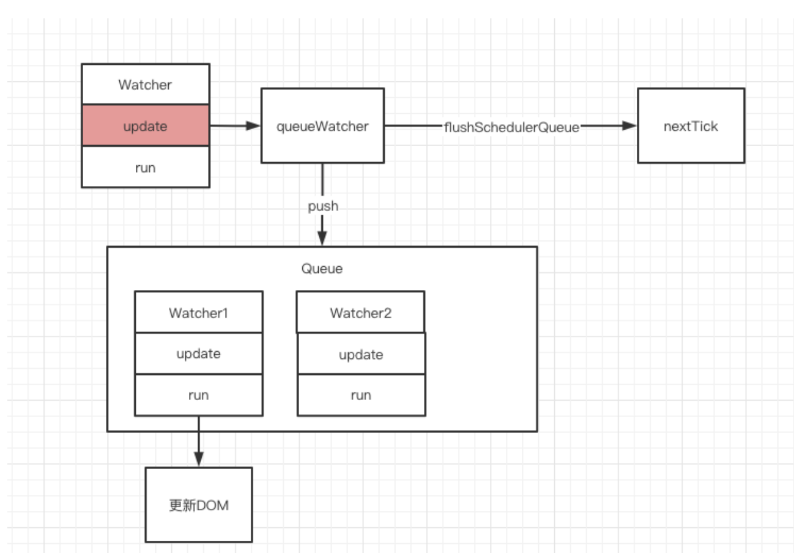
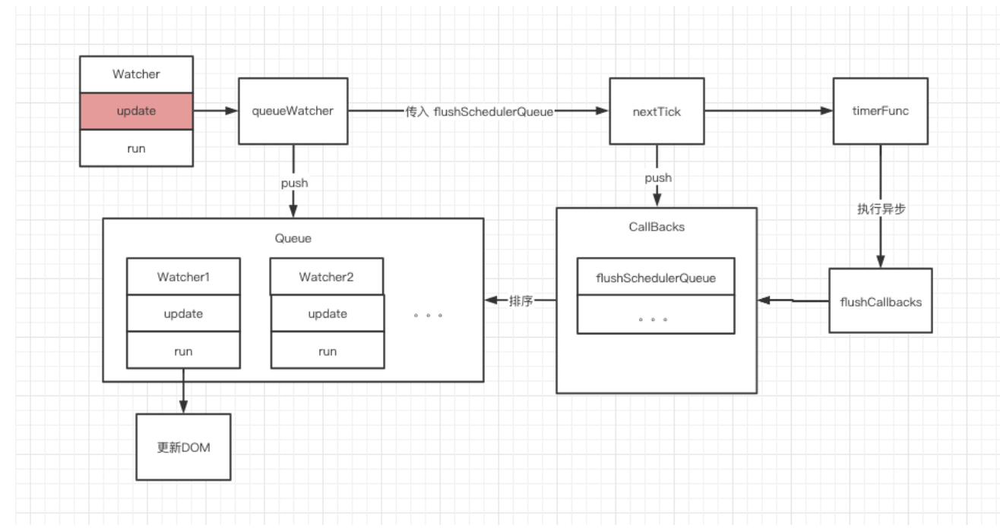
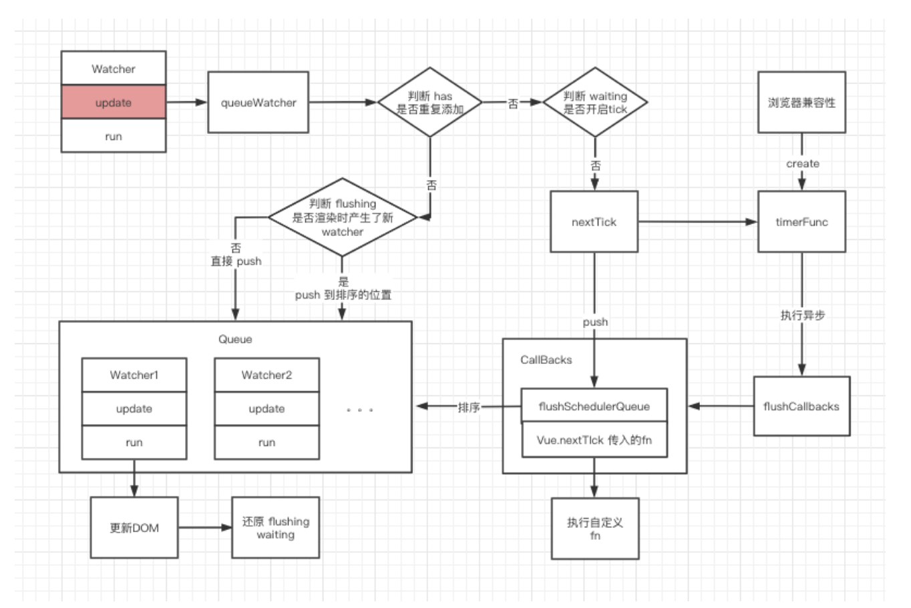

本文主要分析 Vue 从 Data 更新，到通知 Watcher 异步更新视图的流程，也就是下图中的橙色部分。

我们先来回顾一下图中的几个对象：
- Data 对象：Vue 中的 data 方法中返回的对象。
- Dep 对象：每一个 Data 属性都会创建一个 Dep，用来搜集所有使用到这个 Data 的 Watcher 对象。
- Watcher 对象：主要用于渲染 DOM。
接下来，我们就开始分析这个流程。
# Vue 异步更新 DOM 原理
很多同学都知道，Vue 中的数据更新是异步的，意味着我们在修改完 Data 之后，并不能立刻获取修改后的 DOM 元素。
<template>
<div>
<span id="text">{{ message }}</span>
<button @click="changeData">
changeData
</button>
</div>
</template>
<script>
export default {
data() {
return {
message: "hello",
};
},
methods: {
changeData() {
this.message = "hello world";
const textContent = document.getElementById("text").textContent;
// 直接获取，不是最新的
console.log(textContent === "hello world"); // false
// $nextTick 回调中，是最新的
this.$nextTick(() => {
const textContent = document.getElementById("text").textContent;
console.warn(textContent === "hello world"); // true
});
},
},
};
</script>
什么时候我们才能获取到真正的 DOM 元素？
答：在 Vue 的 nextTick 回调中。
这一点在 Vue 官网有详细的介绍，但你是否有想过，为什么 Vue 需要通过 nextTick 方法才能获取最新的 DOM？
带着这个疑问，我们直接看一下源码。
// 当一个 Data 更新时，会依次执行以下代码
// 1. 触发 Data.set
// 2. 调用 dep.notify
// 3. Dep 会遍历所有相关的 Watcher 执行 update 方法
class Watcher {
// 4. 执行更新操作
update() {
queueWatcher(this);
}
}
const queue = [];
function queueWatcher(watcher: Watcher) {
// 5. 将当前 Watcher 添加到异步队列
queue.push(watcher);
// 6. 执行异步队列，并传入回调
nextTick(flushSchedulerQueue);
}
// 更新视图的具体方法
function flushSchedulerQueue() {
let watcher, id;
// 排序，先渲染父节点，再渲染子节点
// 这样可以避免不必要的子节点渲染，如：父节点中 v-if 为 false 的子节点，就不用渲染了
queue.sort((a, b) => a.id - b.id);
// 遍历所有 Watcher 进行批量更新。
for (index = 0; index < queue.length; index++) {
watcher = queue[index];
// 更新 DOM
watcher.run();
}
}
根据上面的代码，我们可以得出这样一个流程图：

图中可以看到，Vue 在调用 Watcher 更新视图时，并不会直接进行更新，而是把需要更新的 Watcher 加入到 Queue 队列里，然后把具体的更新方法 flushSchedulerQueue 传给 nextTick 进行调用。
接下来，我们分析一下 nextTick
const callbacks = [];
let timerFunc;
function nextTick(cb?: Function, ctx?: Object) {
let _resolve;
// 1.将传入的 flushSchedulerQueue 方法添加到回调数组
callbacks.push(() => {
cb.call(ctx);
});
// 2.执行异步任务
// 此方法会根据浏览器兼容性，选用不同的异步策略
timerFunc();
}
可以看到，nextTick 函数非常简单，它只是将传入的 flushSchedulerQueue 添加到 callbacks 数组中，然后执行了 timerFunc 方法。
接下来，我们分析一下 timerFunc 方法。
let timerFunc;
// 判断是否兼容 Promise
if (typeof Promise !== "undefined") {
timerFunc = () => {
Promise.resolve().then(flushCallbacks);
};
// 判断是否兼容 MutationObserver
// https://developer.mozilla.org/zh-CN/docs/Web/API/MutationObserver
} else if (typeof MutationObserver !== "undefined") {
let counter = 1;
const observer = new MutationObserver(flushCallbacks);
const textNode = document.createTextNode(String(counter));
observer.observe(textNode, {
characterData: true,
});
timerFunc = () => {
counter = (counter + 1) % 2;
textNode.data = String(counter);
};
// 判断是否兼容 setImmediate
// 该方法存在一些 IE 浏览器中
} else if (typeof setImmediate !== "undefined") {
// 这是一个宏任务，但相比 setTimeout 要更好
timerFunc = () => {
setImmediate(flushCallbacks);
};
} else {
// 如果以上方法都不知道，使用 setTimeout 0
timerFunc = () => {
setTimeout(flushCallbacks, 0);
};
}
// 异步执行完后，执行所有的回调方法，也就是执行 flushSchedulerQueue
function flushCallbacks() {
for (let i = 0; i < copies.length; i++) {
callbacks[i]();
}
}
可以看到，timerFunc 是根据浏览器兼容性创建的一个异步方法，它执行完成之后，会调用 flushSchedulerQueue 方法进行具体的 DOM 更新。
分析到这里，我们就可以得到一张整体的流程图了。

接下来，我们来完善一些判断逻辑。
- 判断 has 标识，避免在一个 Queue 中添加相同的 Watcher。
- 判断 waiting 标识，让所有的 Watcher 都在一个 tick 内进行更新。
- 判断 flushing 标识，处理 Watcher 渲染时，可能产生的新 Watcher。
- 如：触发了 v-if 的条件，新增的 Watcher 渲染。
结合以上判断，最终的流程图如下：

最后，我们分析一下，为什么 this.$nextTick 能够获取更新后的 DOM？
// 我们使用 this.$nextTick 其实就是调用 nextTick 方法
Vue.prototype.$nextTick = function (fn: Function) {
return nextTick(fn, this);
};
- 可以看到，调用
this.$nextTick其实就是调用了图中的 nextTick 方法，在异步队列中执行回调函数。根据先来后到原则，修改 Data 触发的更新异步队列会先得到执行，执行完成后就生成了新的 DOM ，接下来执行this.$nextTick的回调函数时，能获取到更新后的 DOM 元素了。 - 由于 nextTick 只是单纯通过 Promise 、SetTimeout 等方法模拟的异步任务，所以也可以手动执行一个异步任务，来实现和
this.$nextTick相同的效果。
this.message = "hello world";
// 手动执行一个异步任务，也能获取最新的 DOM
Promise.resolve().then(() => {
const textContent = document.getElementById("text").textContent;
console.log(textContent === "hello world"); // true
});
setTimeout(() => {
const textContent = document.getElementById("text").textContent;
console.log(textContent === "hello world"); // true
});
# 总结
本文从源码的角度，介绍了 Vue 异步更新的原理，来简单回顾一下吧。
- 修改 Vue 中的
Data时，就会触发所有和这个 Data 相关的 Watcher 进行更新。 - 首先，会将所有的
Watcher加入队列 Queue。 - 然后，调用
nextTick方法，执行异步任务。 - 在异步任务的回调中，对
Queue中的Watcher进行排序，然后执行对应的 DOM 更新。